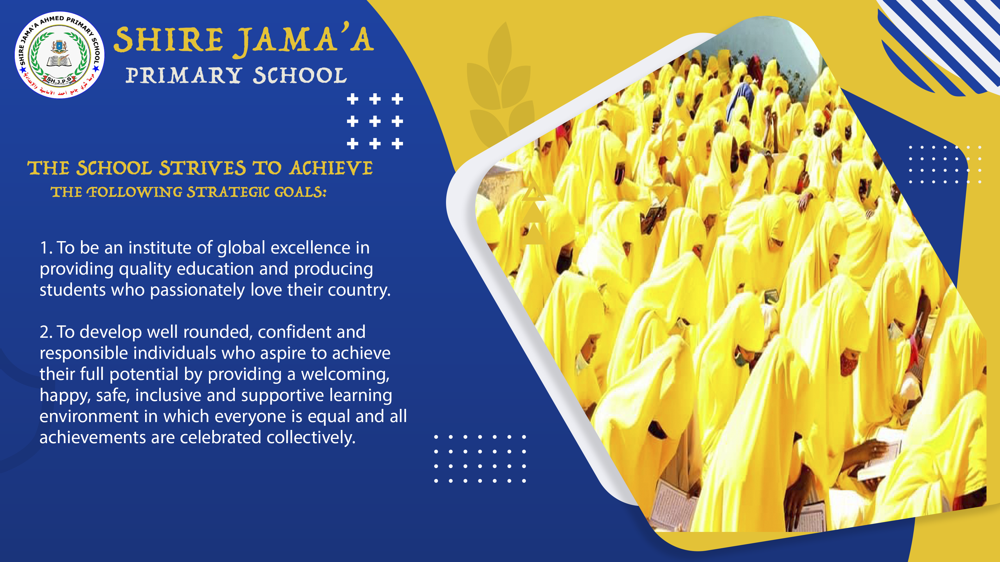

About Us
Welcome to the official website of Shire Jama'a Axmed Secondary. Whether you are a prospective student, current student, professor, researcher, staff member, graduate, parent, neighbor, or visitor, I invite you to explore Shire Jama'a, the home of quality education. Although existing higher education institutions in the country did their best to offer what they could in the way they were able, we still see gaps to be bridged, and filling these gaps is one major goal for the establishment of Shire Jama'a School. he School will continue to fulfill its responsibilities to the society by creating a conducive environment and providing facilities for personal and professional growth of our stakeholders.

Title
Shire Jama school is a public school offering elementary and primary basic education for children from grades one to Eight based on the Somali national curriculum. The school was given the name of famous & well-respected man (shire Jamaa Ahmed) who introduced the Somali alphabet 1970s. The name was selected to encourage the literacy promotion among the community and importance of education. The thought of the school came through the minds of education practitioners spearheaded by two Education activists in the year 2009 in the Abudwak district of central Somalia. The school was founded to fill the gap of the need for a school in the expansive Abduwak district. This district has been most affected by the collapse of central government, and as a result there was no government service available including education provided in the region. Education services have mainly been provided by the Community, small private-sector or charitable organizations. In the circumstances, their achievement in running any kind of education service is remarkable, but they only operate with limited service which still leaves a large majority of children out of school. In Abudwak only 2 schools were open in 2 villages where many of residents of Abudweak town encountered access challenge including fee, and distance. It was estimated that 50% of schools in the district did not even have proper classrooms and many buildings are damaged and unsafe.
The school was founded on a rented four room house
The main work was raising awareness on the importance of education. Our effort were in time rewarded when both day as well as evening classes were established. This awareness on the need for access to education was raised through public gatherings, in religious gatherings as well as through campaigns. Due to the fact that, it was a community initiative, and the fact that there were limited schools around, and that the people are now conscious of the benefits of education, the school gained very wide acceptance and was acknowledged in the region. The community owned the idea and school philosophy making the school in enrollment day in day out. So large was the growth in enrollment that the rented space could no longer hold the large number of learners after only six months since the school was established. The facilities other than the building were also highly required such as the teaching and learning materials among other school necessities. The learners also needed some space on which to play and conduct extracurricular activities.

The school strives to achieve the following strategic goals:
- To be an institute of global excellence in providing quality education and producing students who passionately love their country.
- To develop well rounded, confident and responsible individuals who aspire to achieve their full potential by providing a welcoming, happy, safe, inclusive and supportive learning environment in which everyone is equal and all achievements are celebrated collectively.
We believe strongly the role of community players and well-wishers to help in the expansion of the provision of education services to our children. We envision a situation where all children in Somalia will have an opportunity to go to school and learn and later become good citizens of Somalia and of the World.
challenges faced the school
The school management went back to the community and widely consulted and negotiated with an aim of getting more space to establish a bigger and better education facility that would be able to cater for the larger number of learners. Through a multi stakeholder committee it was agreed that the school should move to a previously established government school that was at the time home to several internally displaced persons. The committee of stakeholders took it as their initiative to persuade the Internally displaced persons and their families to evacuate the school building. There was no alternative shelter for the internally displaced people since they were poor economically and there was no government and NGOs to provide hand. The education committee of the school convinced some of the households to voluntarily shift from the school while some material support was offered to extreamly poor families. The school moved to old building of Somali secondary school which was extremely affected by Long term disrepair. The Civil conflict in Somalia had left the school in deplorable condition. The years of neglect and misuse had further degraded the school. The school nevertheless started in the school in as good condition as we could by then. Teaching and learning continued as it was going on in the previous school location. We were no longer in a rented house due to space and financial limitations.
Title
To that end, the community players, Teachers and even learners were all involved in trying to make the school habitable including cleaning and minimal repairs. The management of the institution and all the relevant stakeholders made great strides in formal rehabilitation of the previously deserted educational institution. The rehabilitation programme was carried out and saw to the massive expansion of the school in terms of the number of classrooms and the space for other teaching and learning activities. We saw great strides from community members who contributed to the rehabilitation of the school motivated by desire of quality education. The Abduwak professionals abroad were particularly instrumental. Tthey constructed a further four classrooms that were not in existence thereon before. However more space was still needed and the worst classes needed further rehabilitation as the school grew in enrollment the role of the community in Abduwak was very memorable in the whole process of rehabilitation and construction of our newly established school.
Title
Since the days of the rented house, the school has rapidly grown through the community initiative and that of the learners and teachers. The school now boasts an upward of 18 classrooms, 3 offices, library room & 3 latrines from only 4 Due to the quality education services and practices and awareness. Especially awareness created by learners to their peers & management led complains towards community ownership in education promotion have made the school enrollment rise to an upward of more than 2000 learners and massive classroom expansion. The school conducted academic performance competition among the classes which inspired learners and out school children to enroll and retain in the school. Community and school management team continuously held coordination and cooperation meetings to discuss and implement school improvement plans. This resulted in community links to school and response to community needs in regard to social, education and peace building.
challenges faced the school
The school developed a teacher recruitment policy that seeks to recruit only the most qualified teachers into the institution. Candidates for teaching positions undergo qualification & reference checkups. This ensured that the quality of education so provided in this school is of the highest possible quality. This has in turn made the school the largest in the region based on the number of enrolled learners and most trustworthy to the community. In the last few years after 2014 the school has always featured in the top schools in terms on National examinations performance in Somalia. In 2015, top 3 learners in national examination graduated from this school. In the first grade 8 exam Galmudug state conducted since its formation 2020, the first 2 learners in the rank belongs to shire Jama School. Further more 12 out of the top 10 students of Galmudug state were Shire jama school graduates. The school have therefore had many graduates who have graduated and joined secondary schools, universities and later colleges and came back to help in the rebuilding of the larger Somalia and the Abduwak Community. We in Particular have some who have come back as teachers among other professionals. Such teachers have been accorded an opportunity to work in the school.
Improve accessibility and quality of formal education
Especially for excluded groups such as displaced people, people living with disabilities, minorities, pastoralists and girls and women.
Improve the quality of learning and transition to higher education
Through the provision of standardized exams and the implementation of a national curriculum framework.
Literacy and numeracy boost
through establishing reading corners and mini libraries .
Promote women’s and girls’ education
Through girl-friendly spaces and sensitization of schools, teachers and communities.
Establish recognized non-formal education
Using flexible delivery systems that create pathways into formal education, training or employment.
Provide life skills training
Through establishing child clubs and empowerment with particularly emphasis on gender and disability.
OUR MISSION
- To create vibrant centers for learning which provide a standard curriculum for students to excel academically and develop into ethically strong and morally elevated.
- Our Mission is to provide high quality education and childcare in a safe, respectful and inclusive environment that builds a foundation for life-long learning.
- To be dedicated to the advancement of learning and ennoblement of life
- Our mission is to provide a safe haven where everyone is valued and respected. All staff members, in partnership with parents and families are fully committed to students’ college and career readiness. Students are empowered to meet current and future challenges to develop social awareness, civic responsibility, and personal growth.
OUR VISION
- To be an institute of global excellence in providing quality education and producing students who passionately love their country.
- Our vision is to develop well rounded, confident and responsible individuals who aspire to achieve their full potential. We will do this by providing a welcoming, happy, safe, and supportive learning environment in which everyone is equal and all achievements are celebrated.
- Our vision is to prepare and motivate our students for a rapidly changing world by instilling in them critical thinking skills, a global perspective, and a respect for core values of honesty, loyalty, perseverance, and compassion. Students will have success for today and be prepared for tomorrow.
- Be a collaborative leader. Collaborative leaders in education have long recognized the benefits of early and frequent engagement with their constituents. They know, as we do, that much like early reading programs, every minute and every dime invested in gaining community support, pays off exponentially.
Bullying prevention policy
Schools are required to have a specific policy that addresses student engagement, and more specifically.
Responding and intervention
Responding and intervention methods are clearly understood and consistently applied by all staff and are modified depending on type, severity and extent of the bullying behaviour. The whole school community is aware of these methods.
Monitoring and evaluation
Monitoring and evaluation of school policies and approaches are conducted on a regular basis, supported by detailed record-keeping and information gathering about the effectiveness of school approaches to address bullying and enable reflective practice and improvement.
Professional learning
Professional learning is valued and staff have access to a range of professional learning opportunities including online training, formal courses, mentoring, supervision and access to the lead
Services
Education services is a function that utilizes customer training and learning opportunities to drive product usage and engagement, leading to increased customer adoption of a product or service.
Class
A classroom is a learning space in which both children and adults learn. The school has many classes and offices of all educational kinds.
Programs
Shire Jama'a offers its students a program that involves multi-educational activities designed to complement and support the academic program in the scientific, cultural, social, artistic, and athletic fields.
Teachers
The school has many teachers those are responsible to prepare and deliver lessons to classes of different ages and abilities, manage pupil behaviour in the classroom and on school premises.
Library
School libraries promote high quality reading and learning opportunities for all. As the educational, emotional and developmental benefits of a school library deserve to be felt by all children.
Activities
At vero eos et accusamus et iusto odio dignissimos ducimus qui blanditiis praesentium voluptatum deleniti atque
Laboratory
school operated by a college or university and used especially for student teaching and the demonstration of classroom practices
Activities
The School has many Activities including the followings
- All
- Culture
- Colloberation
- sport
- primary
{kind=link}
{kind=link}
{kind=link}
{kind=link}
{kind=link}
{kind=link}
{kind=link}
{kind=link}
{kind=link}
{kind=link}
{kind=link}
{kind=link}
{kind=link}
{kind=link}
{kind=link}
Exemplary Outcomes
What we have achieved so far
Abdirashid Saciid Maxamed
2015-2015 & Position 2He was the second candidate of the top 10 candidates in the Somalia National Examination of 2015-2016 academic year. He scored an average marks of 93.2%.
Ahmed Maxamed Maxamud
2015-2015 & Position 2He was the third candidate of the top 10 candidates in the Somalia National Examination of the 2015-2016 academic year. Ahmed scored an average marks of 93.2%.
Maxamed Maqtal Maxamud
2015-2015 & Position 4He was the fourth candidate of the top 10 candidates in the Somalia National Examination of 2015-2016 academic year. He scored an average marks of 93.1%.
Mohamed Abdinasir Sa'ed
2020-2021 & Position 9He was a student from Shire Jama'a Ahmed Secondary school. He appeared in the most coveted top ten list of the 2020-2021 Somali National Examinations (SNE) having scored 94.14 points. Out of the 34,908 students who sat for the national exam in the entire nation, Mohamed became position 9.
Mahad Abdirisack Mohamud
2020-2021 & Position 10He was too closely followed his counterpart as he stood-tall in the top ten list of the 2020-2021 Somali National Examinations (SNE). He proudly garnered 94 points. Mahad was position 10 out of the 34,908 students who did the national examination.